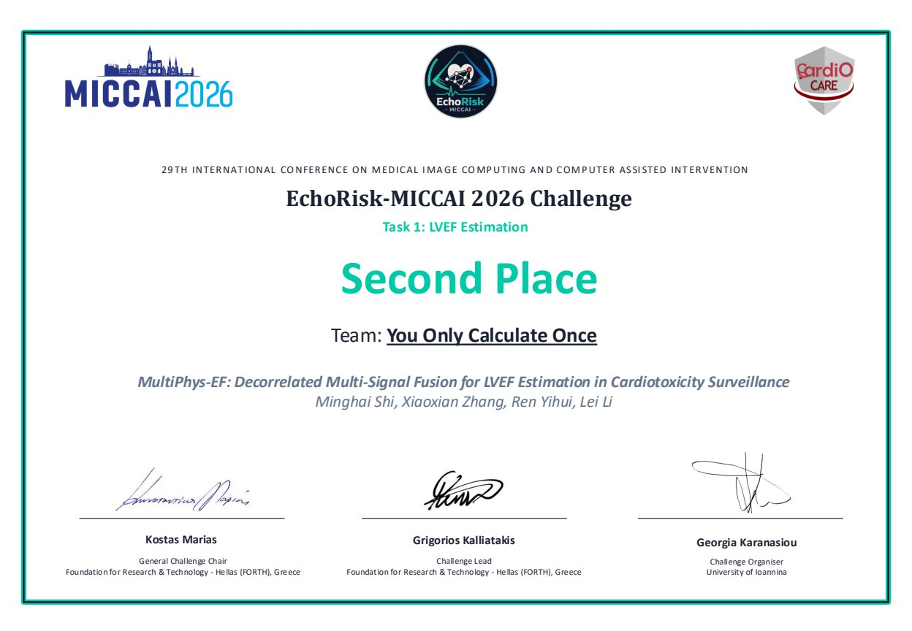
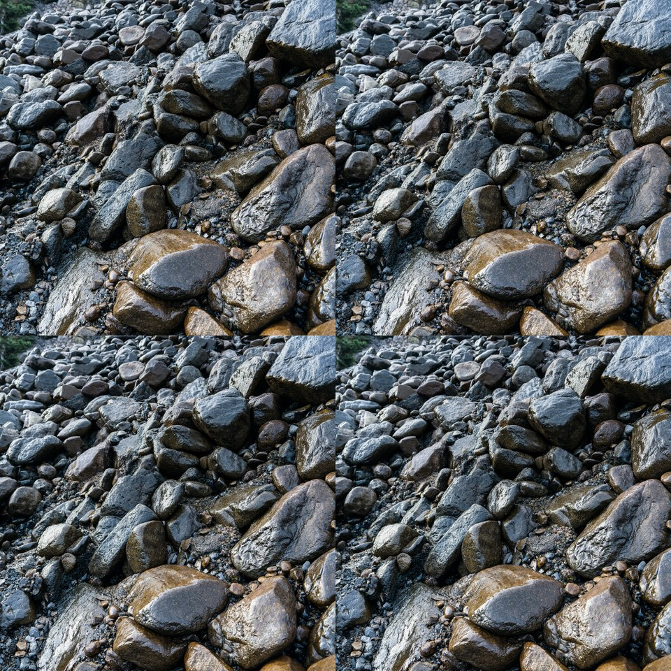
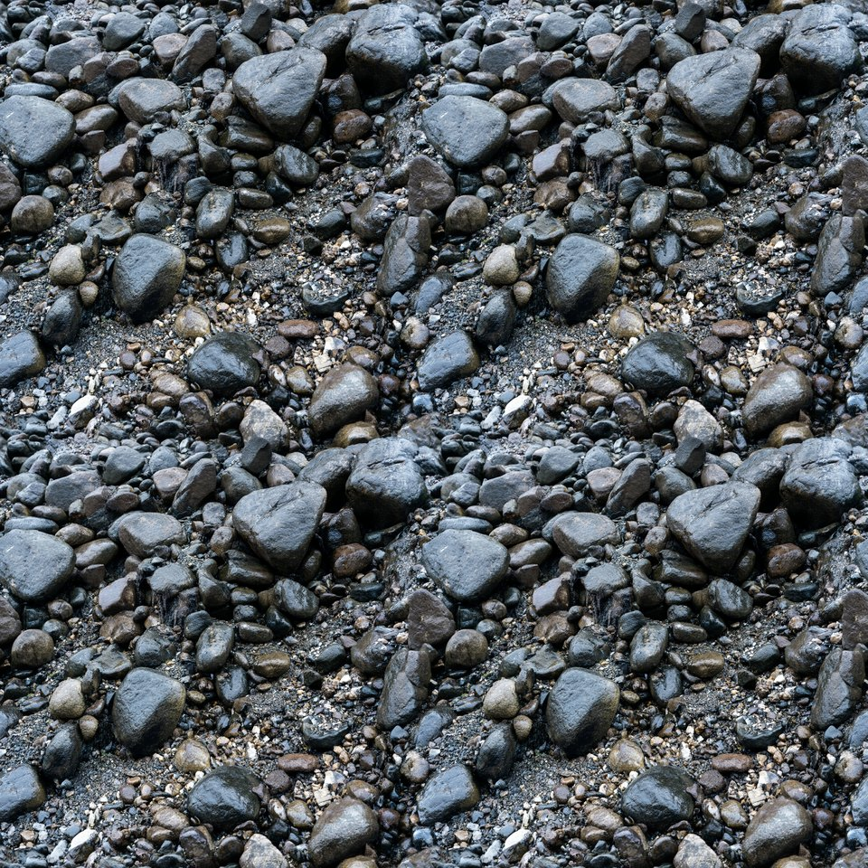
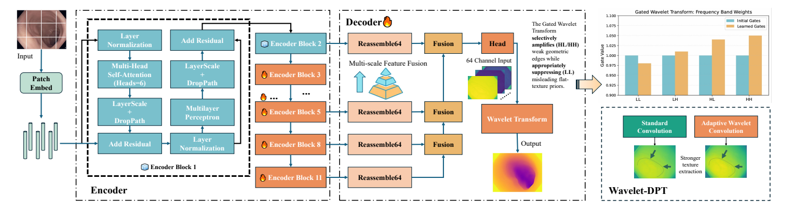
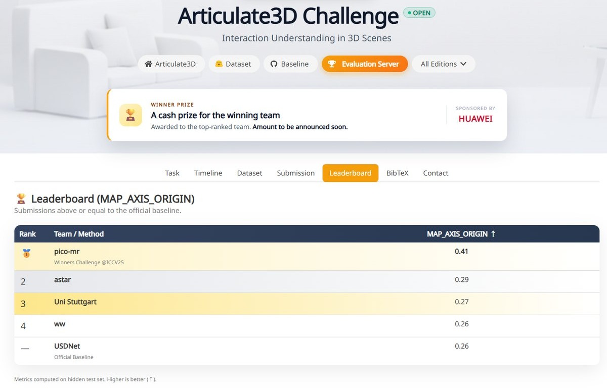

Gastrointestinal Endoscopic Surgery AI
Goal: multimodal AI-assisted decision-making in endoscopic surgery.
01
Medical AI researcher at Shanghai AI Laboratory, working on AI for real-world clinical practice:
Algorithm Researcher · Medical Intelligence CenterCurrent
Shanghai AI Laboratory
2026.05 – Present
Developing and optimizing multimodal medical AI algorithms that integrate medical imaging and clinical information for intelligent diagnosis.
Research Student
Ubisoft La Forge · Ubisoft China
2025.10 – 2026.04
Optimized game asset production by training customized DiT-based generative models, with automated data curation and model quantization for high-performance generation.
Algorithm Engineer Intern
A*STAR
2025.08 – 2025.10
Developed a multimodal 3D scene understanding framework for embodied AI, integrating 2D visual priors into 3D segmentation to enhance interactive affordance perception.
National University of Singapore
Master of Science in Biomedical Engineering
2024 – 2026
02
Goal: multimodal AI-assisted decision-making in endoscopic surgery.
Goal: drug–dosage co-decision prediction and evolution models for metabolic comorbidities.
Goal: an integrated multimodal intelligent screening and diagnosis system for cervical cancer.
Second Prize, 1st National Digital-Intelligent Health Competition Report ↗



Research Internship — Game AI · 2025.10 – 2026.04
Optimized game asset production by training customized DiT-based generative models, implementing automated data curation and model quantization (seamless) to deliver high-performance generation pipelines.
Decoupling Frequency for Endoscopic Depth Estimation in Sparsely-Textured Regions
We propose a framework centered on a gated wavelet dense prediction transform that decomposes feature maps into directional spectral subbands with learnable weights, selectively amplifying sparse edge signals while preserving robust geometric structure in low-texture regions — surpassing previous state-of-the-art on C3VD and SimCol3D.


Research Internship — Embodied AI · 2025.08 – 2025.10
Developed a multimodal 3D scene understanding framework for embodied AI, integrating 2D visual priors into 3D segmentation model frameworks to enhance interactive affordance perception.
2nd Place — Articulate3D Challenge, OpenSUN3D Workshop @ ICCV 2025 Challenge ↗
03
Cervical cancer screening project — Second Prize, 1st National Digital-Intelligent Health Competition
DepthScopy accepted to CVPR 2026 Findings
Decoupling Frequency for Endoscopic Depth Estimation in Sparsely-Textured Regions
Paper ↗2nd Place — Articulate3D Challenge, OpenSUN3D Workshop @ ICCV 2025
04
Open to collaboration, research discussion, and opportunities in medical AI.